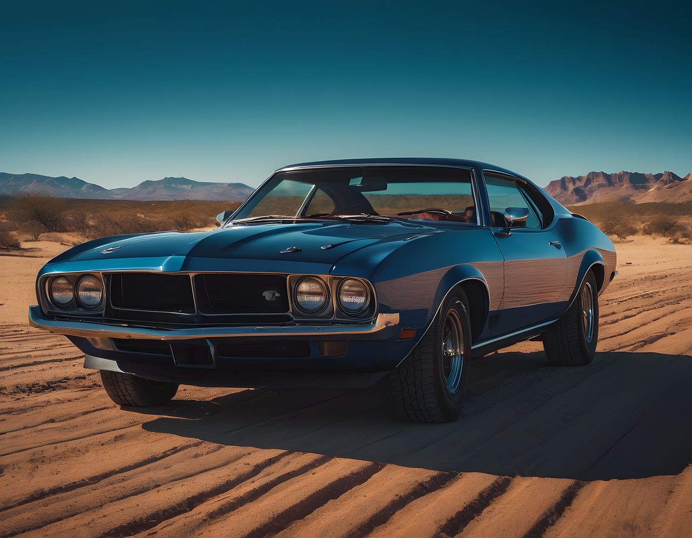
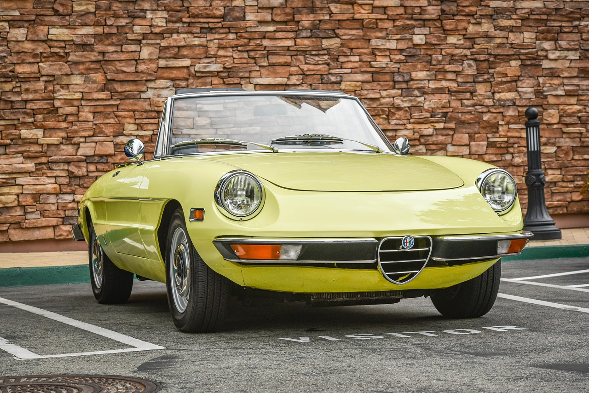

This website has some subtext that goes here under the main title. It's a smaller font and the color is lower contrast
Some random information.

this is some subtext under an illustration or image

this is some subtext under an illustration or image
this is some subtext under an illustration or image
this is some subtext under an illustration or image
Sometimes we make the process more complicated than we need to. We will never make a journey of a thousand miles by fretting about how long it will take or how hard it will be. We make the journey by taking each day step by step and then repeating it again and again until we reach our destination.